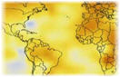
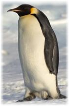
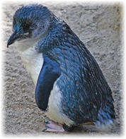
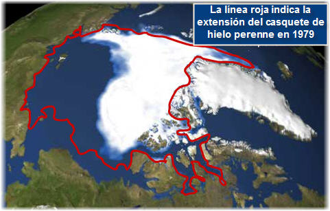

Pingüinos y la máquina del tiempo climático
El cambio del clima en el planeta tiene efectos dramáticos, como lo demuestra el descongelamiento del Polo Norte.
En esta anotación comentaré sobre una pequeña aplicación que la NASA ha puesta en línea sobre este tema, además de comentar la posible extinción de una especie asociada al Polo Sur: los pingüinos.
Las aves marinas del Antártico
De estas aves marinas, conocidas comúnmente como pingüinos, existen alrededor de 17 especies vivientes (aunque algunos expertos piensan que son 20), todas las cuales habitan en el hemisferio Sur. La especie más grande (el Pingüino Emperador), mide en promedio 1.1 metros y pesa alrededor de 35 kgs; mientras la más pequeña (el Pingüino Azul), alcanza una estatura promedio de 43 centímetros y un peso de 1 kg.
(A los costados se muestran fotografías del Pinguino Emperador y del Pingüino Azul. La primera fué tomada por Samuel Blanc, guía naturalista, fotógrafo y conferenciante en regiones polares; la segunda es de Tanya Dropbear fotógrafa aficionada.)
Una característica de los pingüinos es que no temen al hombre, y espontáneamente se acercan a los exploradores. Aunque es recomendable que una persona no se acerque a menos de 3 metros, para no ponerlos nerviosos. No hay problema si el pingüino es el que se acerca más. (Cuando vayan a la Antártida ya lo saben ^_^).
La parte dramática ocurre cuando los investigadores reportan que las poblaciones de pingüinos están experimentando una rápida disminución en su población.
Esto no solamente se atribuye al cambio climático, el cual sin duda es un factor fundamental, sino también a la contaminación de los mares por la extracción de petróleo y por los derrames del mismo. Otro factor que influye es el hecho de que el ser humano ha afectado indiscutiblemente la cadena alimenticia en el mundo, al consumir enormes cantidades de determinadas especies, con lo que se convierte en competidor directo de otras especies que se alimentan de las primeras.
Recordemos el ritmo de crecimiento de la población humana, que en el año 1900 era de 1,650 millones, para 1950 fue de 2,600 millones, en el año 2000 llegó a los 6,000, y se piensa que en el año 2050 andemos rondando los 9,000 millones de personas. ¿Realmente alguien cree que esto no afecta al resto de los seres vivos en el planeta?
Regresando al tema del cambio climático, los pingüinos ya son considerados los canarios del clima terrestre, es decir, como los canarios en las minas de carbón notificaban del peligro de gases tóxicos (al dejar de cantar o al morir) a los mineros, así los pingüinos ya son la alarma viviente de la amenaza del calentamiento global.
El cambio en el clima, online
La NASA ha puesto en línea una aplicación la cual muestra gráficamente datos en el cambio del clima. Con dar unos clics es posible ver la transformación que ha ocurrido en el planeta durante varias décadas.
Tiene 4 categorías: Derretimiento en el Polo Norte, cambios en el nivel del mar, en los niveles de emisiones de dióxido de carbono (CO2), y en la temperatura promedio del planeta.
Les dejo una imagen de esta aplicación, relacionada con el derretimiento del Polo Norte. El contorno rojo indica la extensión del hielo perenne (que no se derrite en verano) en 1979, el hielo visible indica la extensión de ese mismo tipo de hielo en 2007.

Lectura inicial en Science Daily: Penguins Setting Off Sirens Over Health Of World’s Oceans
Enlace: NASA: Climate Time Machine
Información adicional en Wikipedia, enlaces:
Pingüinos
Población humana
Metadatos y acciones
 Temas: biologia, ciencia, clima, tierra, vida ⋅
Para guardar: Enlace permanente a esta anotación.
Temas: biologia, ciencia, clima, tierra, vida ⋅
Para guardar: Enlace permanente a esta anotación.
 Print This Post
Print This Post
Comentarios
Los comentarios están cerrados.
Categorías
Últimas 4 anotaciones
Últimas anotaciones en cada categoría

Divulgación
El dinero no fomenta la creatividad: Daniel Pink en TEDGlobal 2009

Inspiración
Los 30 no son los nuevos 20

Noticias
Ver tu mente en tiempo real: Christopher deCharms en TED 2008
![Música en la era digital [Animación]](../../../wp-content/themes/tma/images/featured/animation_04_2009_featured.jpg)
Ocio
Música en la era digital [Animación]
septiembre 18, 2009, 6:48 am
Vivo en San Luis Potosí, MÉXICO y me interesa saber el hábitat de los “pingüinos”, porque mi hija está estudiando Diseño Gráfico en la Universidad del Litoral, en Santa Fé, Argentina y en sus vacaciones de cambio de cuatrimestre(Julio del 2009), fueron a “El Fin del Mundo” (Ushuaia) y no tuvo la oportunidad de observarlos, lo que la desilusionó mucho… Ví un documental sobre ellos y me maravillaron! Dónde puede vérseles más fácil y frecuentemente? Gracias.
abril 12, 2010, 1:37 pm
La única manera de salvar al planeta es evitando la sobrepoblación humana, es decir los gobiernos de todos los países del mundo deben tomar drásticas medidas: Control de natalidad. (máximo un hijo por pareja). Reforestación de áreas en peligor de desertificación. Menos consumismo, ej, si nos vestimos sólo de color blanco se evitaría la contaminación del agua por colorantes. Incremento del uso de la energía eólica y la solar evitando el uso de combustibles fósiles. Llevar una vida vegetariana, (hasta ahora sigo vivo con buena salud y juventud).
att
Juan Chicaiza (Ecuador)
octubre 31, 2010, 8:59 am
Estimada Laura Elena Castillo Zúñiga: Uno de los lugares para observación recomendado en Argentina, es en la Ciudad de Puerto Madryn en la Provincia (Estado) de Chubut, donde ademas de poder ver pinguinos, podrá observar otras especies, como ballenas. Le dejo un link para mayor información:
http://es.wikipedia.org/wiki/Puerto_Madryn
diciembre 7, 2012, 4:14 am
Muy amable, Raúl* Hasta ahorita leí su comentario! Agradezco su atención~ SALUDOS.